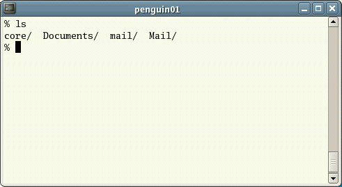

1.1 Liệt kê tập tin và thư mục
ls (list - liệt kê)
Khi bạn đăng nhập, thư mục hiện tại sẽ là nhà riêng của bạn. Thư mục nhà riêng sẽ trùng tên với tên đăng nhập, ví dụ, ee91ab, và đó là nơi chứa các tập tin và thư mục con của bạn.
Để biết trong nhà riêng có những gì, hãy gõ
% ls
Lệnh ls ( chữ 'L' và 'S' viết thường ) liệt kê nội dung của thư mục hiện tại.

Có thể nhà riêng của bạn sẽ không có tập tin nào nhìn thấy
được, trong trường hợp này, câu lệnh sẽ trở lại dấu nháy UNIX. Còn
không, có thể đã có một số tập tin được đặt sẵn bởi người quản trị khi
tài khoản của bạn được thiết lập.
Tuy nhiên, thực chất thì ls không hiển thị tất cả các tập tin trong thư mục của bạn mà chỉ những tập tin không bắt đầu với dấu chấm (.) Các tập tin bắt đầu với dấu chấm được gọi là tập tin ẩn và thường chứa những thiết lập quan trọng của nhiều phần mềm. Chúng được ẩn đi vì bạn không nên thay đổi chúng trừ khi bạn đã rất thành thạo UNIX!!!
Để liệt kê tất cả các tập tin trong thư mục nhà riêng kể cả thư mục ẩn, bạn gõ
% ls -a
Như bạn có thể thấy, ls -a liệt kê
cả các tập tin ẩn.

ls là một ví dụ của lệnh cho phép
thêm lựa chọn: -a
là một lựa chọn. Lựa chọn có thể thay đổi cách hoạt động của lệnh. Có
các trang hướng dẫn sử dụng trực tiếp (online man pages) cho bạn biết tất cả các lựa chọn
có thể và cách chúng thay đổi hoạt động của một lệnh bất kỳ. (Xem phần
sau của hướng dẫn này)
1.2 Tạo thư mục mới
mkdir (make directory - tạo thư mục)
Bây giờ chúng ta sẽ tạo một thư mục mới trong nhà riêng của
bạn để chứa các tập tin mà chúng ta sẽ tạo ra trong suốt bài hướng dẫn
này. Để tạo một thư mục con tên là unixstuff trong thư mục hiện tại,
bạn gõ:
% mkdir unixstuff
Để thấy được thư mục vừa tạo, bạn gõ
% ls
1.3 Di chuyển sang một thư mục khác
cd (change directory - thay đổi thư mục)
Lệnh cd directory nghĩa là chuyển thư mục hiện tại sang 'directory'. Thư mục hiện tại tức là thư mục bạn đang truy cập, nói cách khác là vị trí hiện tại của bạn trong cây thư mục.
Để di chuyển sang thư mục vừa mới tạo, bạn gõ
% cd unixstuff
Gõ ls để hiện nội dung (sẽ không có gì hết)
Bài tập 1a
Tạo một thư mục nữa trong unixstuff có tên là backups
1.4 Thư mục . và ..
Vẫn trong unixstuff, bạn gõ
% ls -a
Như bạn thấy, trong thư mục unixstuff (và trong tất cả các thư mục khác), có hai thư mục đặc biệt tên là (.) và (..)
Thư mục hiện tại (.)
Trong UNIX, (.) là thư mục hiện tại, vậy nếu gõ:
% cd .
CHÚ Ý: có một dấu cách giữa lệnh cd và dấu chấm
nghĩa là đứng yên tại chỗ (vẫn trong unixstuff).
Ban đầu thì trông có vẻ vô dụng, nhưng việc sử dụng (.) làm tên thư
mục hiện tại có thể giúp bạn phải gõ ít hơn rất nhiều, như bạn sẽ thấy
ở các phần sau.
Thư mục mẹ (..)
(..) là thư mục mẹ của thư mục hiện tại, vậy gõ
% cd ..
sẽ đưa bạn lên một nấc cao hơn trong cây thư mục (trở lại thư mục nhà riêng). Hãy thử xem.
Chú ý: gõ cd không có đối số sẽ luôn luôn đưa bạn đến thư mục nhà riêng. Việc này rất hữu ích nếu bạn bị lạc trong hệ thống tập tin.
1.5 Tên đường dẫn
pwd (print working directory - in thư mục hiện tại)
Tên đường dẫn cho bạn biết vị trí của bạn trong toàn bộ hệ thống tập
tin. Ví dụ, để tìm ra đường dẫn tuyệt đối đến thư mục nhà riêng, bạn
gõ cd để di chuyển về thư mục nhà riêng rồi sau đó gõ
% pwd
Tên đường dẫn đầy đủ sẽ trông giống như thế này
/home/its/ug1/ee51vn
nghĩa là ee51vn (thư mục nhà riêng của bạn) là thư mục con của ug1 (thư mục của nhóm tài khoản), chính nó lại là thư mục con của its, nằm trong thư mục home, nằm trong thư mục root "/" ở bậc cao nhất.

Bài tập 1b
Hãy sử dụng lệnh cd, ls và pwd để khám phá hệ thống tập tin.
(Nếu bạn bị lạc, dùng lệnh cd không có đối số để trở lại nhà riêng)
1.6 Chi tiết hơn về thư mục nhà riêng và tên đường dẫn
Tên đường dẫn
Gõ cd để trở về nhà riêng, sau đó gõ
% ls unixstuff
để liệt kê nội dung của thư mục unixstuff.
Bây giờ gõ
% ls backups
Bạn sẽ nhận được thông báo như sau
backups: No such file or directory
(không có tập tin hay thư mục nào như vậy)
Lý do là vì backups không
nằm trong thư mục hiện tại của bạn. Để sử dụng một lệnh đối với một tập
tin hay một thư mục không nằm trong thư mục hiện tại, bạn phải
dùng cd để di chuyển hoặc gõ đường dẫn đầy đủ. Để liệt kê nội dung của thư mục backups, bạn phải gõ như sau:
% ls unixstuff/backups
~ (thư mục nhà riêng)
Thư mục nhà riêng cũng có thể được thay thế bằng ký tự dấu ngã ~. Nó có thể được dùng để viết đầy đủ các đường dẫn xuất phát từ nhà riêng của bạn. Vậy nếu gõ
% ls ~/unixstuff
thì UNIX sẽ liệt kê nội dung thư mục unixstuff, không cần biết bạn đang ở đâu trong hệ thống tập tin.
Bạn nghĩ
% ls ~
sẽ liệt kê những gì?
Và còn
% ls ~/..
sẽ liệt kê những gì?
Tổng kết
| Lệnh | Ý nghĩa |
|---|---|
| ls | liệt kê tập tin và thư mục |
| ls -a | liệt kê tất cả các tập tin và thư mục |
| mkdir | tạo thư mục mới |
| cd directory | di chuyển tới một thư mục |
| cd | di chuyển đến thư mục nhà riêng |
| cd ~ | di chuyển đến thư mục nhà riêng |
| cd .. | di chuyển đến thư mục mẹ |
| pwd | hiện đầy đủ đường dẫn của thư mục hiện tại |